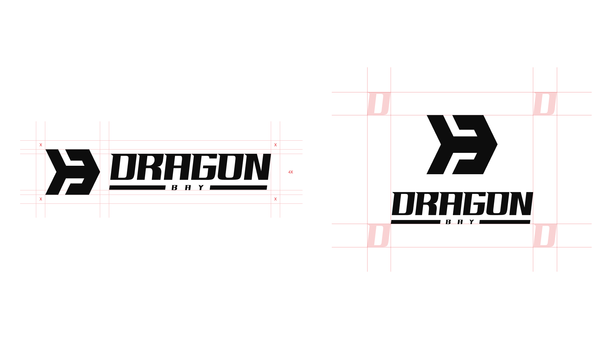
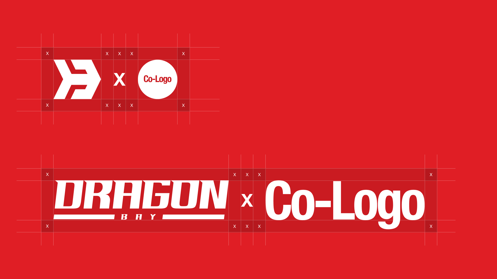
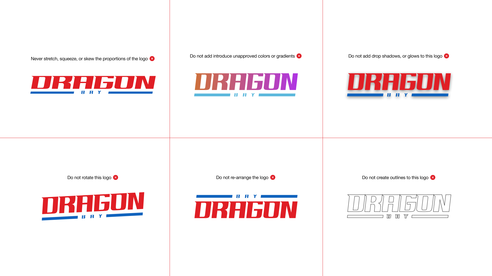
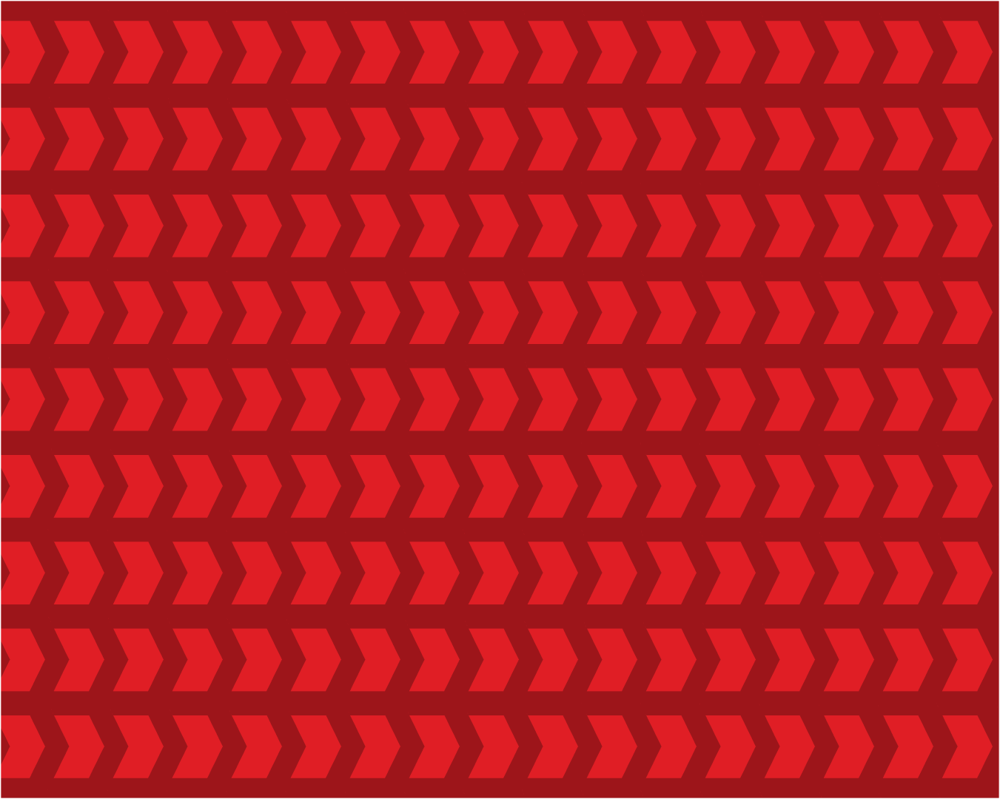
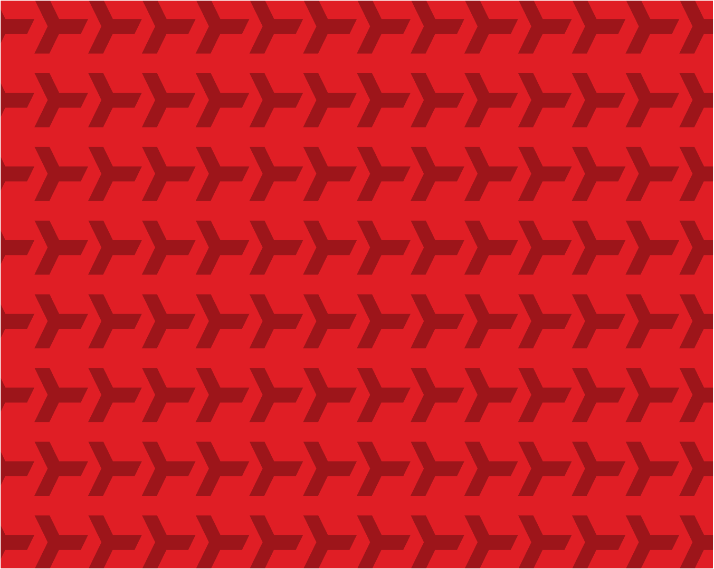

The D
A bold geometric foundation that anchors the Dragon Bay name in industrial strength.
A bold identity for a world
that never stops moving.
Industrial strength. B2B trust.
A clear direction for global trade.
Dragon Bay connects international markets and local businesses through end-to-end logistics. The identity pairs the power of industrial infrastructure with the reassurance of a trusted partner.
One distinctive mark. A versatile family of lockups, from cargo containers to compact digital spaces.
Preview backgrounds are not included in the logo downloads. White artwork is selected automatically on red and blue.
A bold geometric foundation that anchors the Dragon Bay name in industrial strength.
Interlocking blades express the power and propulsion behind maritime logistics.
A sharp directional form conveys speed, precision, and a supply chain in motion.
A high-impact primary color, a dependable accent, and two clear neutrals.
For the two brand colors, follow the guide’s 65 / 35 balance. Use neutrals to give content room to breathe.
Ratios are calculated from the exact HEX values. Regular text needs 4.5:1; large text needs 3:1. Avoid red text on blue, or blue text on red.
A neutral, precise typeface balances the expressive wordmark and keeps communication focused.
| Style | Weight | Tracking | Line height |
|---|---|---|---|
| Heading | Medium | −4% | 110% |
| Subheading | Regular | −2% | 120% |
| Body | Regular | 0% | 140% |
| Caption | Regular | 40% | 110% |
Helvetica Neue is used when installed. Helvetica and Arial are the browser fallbacks. Font files are not included in the asset kit.
Consistency protects recognition. Keep the proportions, color, and composition of the supplied artwork intact.
Keep text, graphics, and edges outside the safe zone. Use the X references in the master artwork below.

Maintain each identity’s safe zone. The master construction below shows the spacing around the separator and partner mark.

Maintain the integrity of the mark. Do not stretch, recolor, add effects, rotate, rearrange, or outline the artwork.

Six rules for every logo, symbol, and lockup.
Never stretch, squeeze, or skew.
No new colors or gradients.
No shadows, glows, or effects.
Never rotate the artwork.
Do not rearrange its elements.
Do not turn the logo into an outline.
Propeller and forward-arrow patterns extend the mark across large surfaces, packaging interiors, and digital backgrounds.


Authentic, cinematic, and high contrast. Use wide views of ports, industrial infrastructure, and organized warehouses. Natural, dramatic light; people focused on the work.
The identity at work across transport, packaging, environments, and everyday touchpoints.
Original vectors, production-ready exports, and the complete guide. All in one place.

22 SVGs · 22 PNGs · 9 original vectors
33-page PDF · Color & type tokens
Choose an asset and format. Logo exports are transparent; profile images keep their original background.